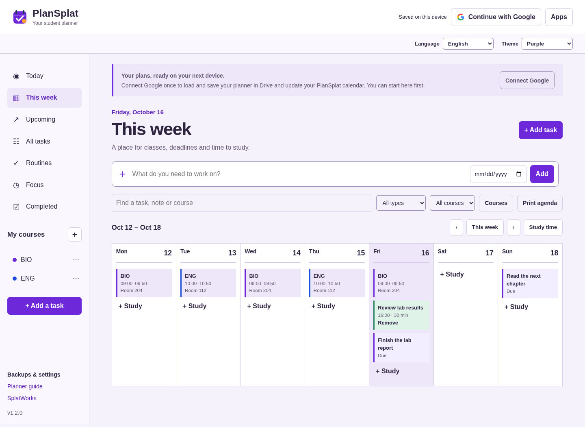

PlanSplat student planner
Open PlanSplat to organize assignments, exams, projects, classes and study time. Start with a device draft or connect your Google account to load and automatically save your planner in Drive.
Connect Google
Choose Continue with Google, then Continue with Google in the connection window. Choose your account and allow access to files used with the app and calendars created by the app. The same authorization connects Drive and your separate PlanSplat calendar; no second connection in settings is needed. If you decline Calendar permission, Drive saving still works and Connect Calendar appears in the header. PlanSplat finds your planner using its Drive properties, including on a new device; you do not need to find a file ID. If no planner exists, it creates one.
The status reports Saved to Google Drive after a completed sync. Edits first save on the device, then sync after a short pause. PlanSplat also checks for updates when you return to the tab and periodically while it is open. Google access tokens expire; choose Reconnect Google when prompted to reconnect Drive and Calendar together. Offline or unsynced changes remain in that account's device draft.
The main Drive file is PlanSplat.plansplat.json. A recovery file for each browser preserves that browser's checkpoint during overlapping saves from different devices. These files are updated, not duplicated for each edit. Keep the recovery files while their devices are in use. PlanSplat merges matching planner/recovery files and asks you to choose between conflicting edits. Simultaneous first-time connections can produce extra main files; the app merges them and retains the originals.
If you started a separate device-only planner, Add device planner explicitly merges it into the connected account. A device draft never silently moves to another Google account. Returning after a reload requires sign-in to load an account draft. Account → Sign out clears the active account view; select the device-draft removal option on a shared computer. Signing out does not delete your Google Drive files.

Plan schoolwork
- Add task records an assignment, exam, project or personal task. Choose a course, due date/time, day to work on it, estimated minutes, priority, notes, resource link and checklist.
- While adding or editing a task, choose + New course… in Course or use + Add course beside it. Saving selects the new course and returns to the task with its title, notes and checklist intact. Cancelling keeps the previous course.
- Today shows overdue work and work due or planned today. Upcoming lists future deadlines. All tasks includes undated work. Filter/search by title, notes, course or type.
- Courses stores class names, teacher, location and weekly meeting times. The course controls are available on phones through Courses above the task list.
- This week combines class meetings, task deadlines and study blocks. Choose Plan time on a task or Study time in the weekly view. Scroll the timetable horizontally on small screens.
- Check off a task to finish it. Recurring tasks create one next occurrence. Daily, weekdays, weekly and monthly options are supported; monthly dates clamp to the final day of a shorter month.
- Routines lets you choose weekly days and record check-ins. No public rankings or streak penalties are shown.
- Choose Focus on a task and start the timer. Adjust study/break durations, pause or reset. Completed study sessions appear in Focus. Timers use an absolute finish time to handle sleeping tabs; the next phase starts when you choose it.
Dates use your device's local calendar and time zone. A task deadline and a planned study date are separate fields. Review dates and class times after travel or a time-zone change.
Connect Google Calendar
Continue with Google connects Drive and Calendar in one flow. PlanSplat creates a separate PlanSplat calendar and remembers its ID in the main Drive file's app properties, so another device can reuse it. It does not require a trip to settings or a second Google popup.
While PlanSplat is open and authorized, task deadlines and study blocks sync after edits, periodically and when you return to the tab. Sync now updates Drive and Calendar. The Calendar button in the header reports saved/updating status. If Calendar access was declined or fails, Connect Calendar or Reconnect Calendar in the header retries directly. Drive saving works independently of Calendar permission. After a reload or authorization expiry, reconnect Google to restore both connections.
- Deadlines without a due time are all-day events. A timed deadline uses a 15-minute marker starting at the due time; it does not reserve study time. Study blocks use their scheduled duration.
- Completion adds a check mark to the deadline title. Deleting a task/block or removing its due date removes its managed event; restoring the item recreates it.
- The calendar's time zone is set from the device on creation and retained on other devices. Class meetings and routines appear in the planner only.
- Updates flow from PlanSplat to Google Calendar. Google Calendar edits do not change planner tasks and may be overwritten after the corresponding planner item changes. Events added manually in Google Calendar are preserved. Managed events whose tasks have not yet loaded from another device are also retained until an explicit planner deletion or cleared schedule is received.
- Disconnect Calendar in settings stops updates for the current session and leaves existing events in Google Calendar. The next Google sign-in connects both services again. Reconnecting reuses that calendar. No sharing or invitations are created. Sync pauses when the app is closed.
Calendar updates replace the complete start/end pair when a deadline changes between all-day and timed, avoiding Google's invalid date/dateTime error. If another Calendar request fails, the status includes Google's diagnostic detail and Drive saving continues.
The host's Google Cloud project must enable Google Calendar API and allow the calendar.app.created OAuth scope. School policy can restrict authorization. See Google setup if permission is denied. On October 16, 2026, the project owner enabled Calendar API and a Google Workspace user confirmed that a dated task appeared in the PlanSplat calendar. Event edits, deletion/restoration and cross-device behavior also have automated API-simulation coverage; those operations have not yet been independently verified with a real account.
Language and color
Use Language and Theme below the account bar. The language choice is shared with other DrawSplat tools on the same domain. Purple matches the suite; Ocean, Forest and High contrast provide alternatives. Both choices stay on this browser/device. Changing either choice preserves student-entered text and open task/course drafts. These display preferences are separate from the planner JSON and Google account.
Backups and reminders
Backups & settings provides a native JSON backup, CSV task export/import, calendar export and reminder permission. Choose Download planner backup to save PlanSplat.plansplat.json on your computer. Choose Import planner backup to reload that JSON on this device or another one. Importing merges it with current work and keeps newer tasks; it does not replace the whole planner. The backup includes courses, tasks, routines, check-ins, study blocks, focus history and sync conflict/deletion records, but no Google authorization tokens. Download a backup before clearing browser storage. Recently deleted restores removed tasks, courses, routines and study blocks.
CSV import accepts a Title, Content, Task Name, Task or Name column, common notes/description columns, ISO due dates, priorities and supported status values. Todoist/TickTick exports vary: review imported dates, recurrence, checklists and course assignments. CSV imports do not automatically recreate every feature from another service.
Calendar export creates an .ics file containing task deadlines as all-day events and study blocks at their scheduled times. Task due times appear in event descriptions. This file export is a separate one-time snapshot; importing it into Google Calendar does not enable ongoing updates. Print agenda prints the current task or weekly view.
Reminders and timer notifications require browser permission and an open app. Sleeping tabs, device sleep and browser settings can delay notifications. PlanSplat does not deliver push notifications after the app is closed.
Privacy and limits
Planner content stays in this browser until you connect a Google service or export a file. Connected saving sends planner data directly to Google's Drive API. Access uses the drive.file scope; Google tokens remain in tab memory and are excluded from backups. Google sign-in requests drive.file and calendar.app.created together. Calendar permission may be declined while retaining Drive access; a header action can request it later. The same account/token connects the services; a standalone Calendar retry also checks that it matches the Drive account. It sends task titles, notes, course names, status, deadlines and study-block details to the app-created calendar. No Gmail, Classroom, contacts or whole-Drive access is requested. No file sharing is enabled automatically.
Browser drafts and cached app resources are separate on each domain/device/profile. Use Privacy to export or clear origin-local data and control optional connections. School Google Workspace policy may block authorization. Follow the school's account and device requirements. See Google Drive setup for exact-origin OAuth configuration on another host.
The language switcher offers English, Spanish, Vietnamese, Arabic, Chinese and the shared Hindi/Urdu option (Hindi interface). Arabic uses a right-to-left layout. Student-entered text supports Unicode and is never translated automatically. Limits include 10,000 task records, bounded history/checklists, and native planner files under 6 MB. Deleted records are retained as deletion markers for sync; they remain in exported backups until a future explicit compaction workflow. Drive recovery files contain the same personal planning data as the main file.
Development and verification
Development plan describes the release stages and future features. Browser tests exercise sign-in/API responses, file discovery, repeated updates, reconnect, device drafts and independent-device loading. A real Google Workspace user confirmed dated-task creation in Google Calendar after API enablement on October 16, 2026. The combined-sign-in flow and additional event operations are covered by API simulations; real-account checks must name the specific operations observed.